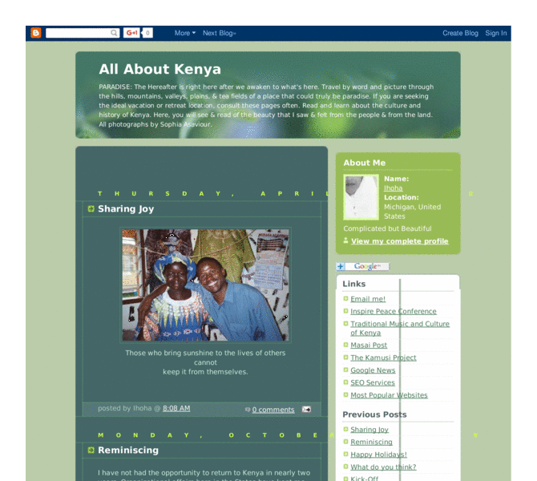

Previewing: All About Kenya Previewing: All About Kenya 
Use the left/right red arrow controls to navigate through this ring - Click the preview image to visit the member site.

PARADISE: The Hereafter is right here after we awaken to what's here. For two months in 2005, I traveled up and down the hills, over or through mountains, valleys, plains, & tea planations, worked in schools and enjoyed the food and the people. My eyes beheld what could truly be paradise. All ORIGINAL photographs taken by Dr. Sophia Asaviour and stories about Kenya, K
All About Kenya owned by:
 my1968damon my1968damon
A member of the original webring since 03/07/2006.
|
|